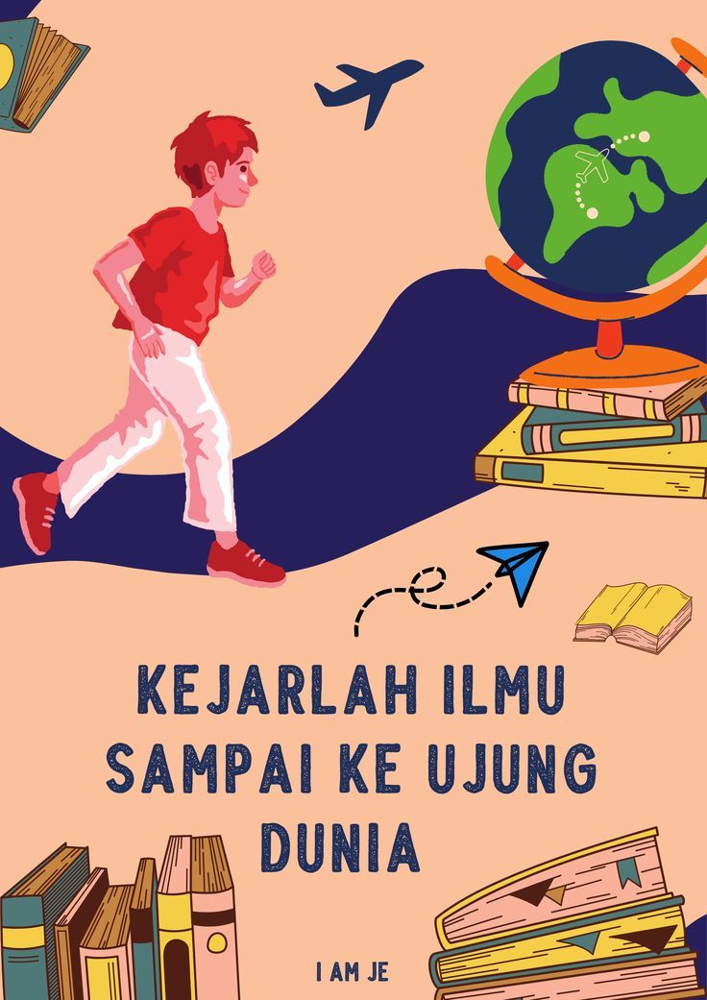

Pendidikan

Perkembangan Pendidikan
Berkembangnya zaman memudahkan semua orang untuk mencari dan mendapat informasi yang dibutuhkan. Termasuk dalam hal pendidikan.
Saat ini, situs penyedia informasi pendidikan menjadi salah satu alat untuk media pembelajaran di Indonesia maupun di dunia. Penggunaan situs-situs tersebut memiliki keunggulan dengan banyaknya sumber yang tidak terbatas dan mudah digunakan.
Caranya, siswa cukup menyiapkan perangkat elektronik dan kuota internet. Situs penyedia informasi seputar pendidikan merupakan salah satu contoh pemanfaatan teknologi di bidang pendidikan. Banyak sekali manfaat dari situs penyedia informasi pendidikan, di antaranya sebagai berikut.
Peringkat Pendidikan Tertinggi di Indonesia
| Kota |
Universitas |
| Jakarta |
Universitas Indonesia |
| Bandung |
Institut Teknologi Bandung |
| Bogor |
Universitas Pertanian Bogor |
| Yogyakarta |
Universitas Gajah Mada |
Perbaikan pendidikan di Indonesia memerlukan pendekatan yang komprehensif dan kerjasama antara pemerintah, lembaga pendidikan, masyarakat, dan sektor swasta. Reformasi pendidikan yang berkelanjutan, pelatihan guru yang lebih baik, dan peningkatan akses terhadap pendidikan berkualitas adalah beberapa langkah yang dapat diambil untuk meningkatkan sistem pendidikan di Indonesia.
Pendidikan Di Indonesia
Sistem pendidikan di Indonesia mencakup tingkat pendidikan dasar, menengah, dan tinggi. Pendidikan dasar terdiri dari sekolah dasar (SD) selama 6 tahun dan sekolah menengah pertama (SMP) selama 3 tahun. Pendidikan menengah terdiri dari sekolah menengah atas (SMA) atau sekolah menengah kejuruan (SMK) selama 3 tahun
Penyebab Lemahnya Pendidikan Di Indonesia
Masalah pendidikan di Indonesia kompleks dan dapat dipengaruhi oleh sejumlah faktor. Beberapa penyebab umum dari lemahnya sistem pendidikan di Indonesia meliputi:
- Kurangnya Akses
- Kurangnya Kualitas Guru
- Kurangnya Kualitas Guru
- Kesenjangan Regional
- Kurangnya Sumber Daya Finansial
Perbaikan pendidikan di Indonesia memerlukan pendekatan yang komprehensif dan kerjasama antara pemerintah, lembaga pendidikan, masyarakat, dan sektor swasta. Reformasi pendidikan yang berkelanjutan, pelatihan guru yang lebih baik, dan peningkatan akses terhadap pendidikan berkualitas adalah beberapa langkah yang dapat diambil untuk meningkatkan sistem pendidikan di Indonesia.
Kualitas Pendidikan Di Indonesia
Meningkatkan kualitas pendidikan di Indonesia memerlukan upaya bersama dari pemerintah, lembaga pendidikan, masyarakat, dan sektor swasta. Berikut adalah beberapa langkah yang dapat diambil untuk meningkatkan kualitas pendidikan di Indonesia:
- Investasi Pendidikan
- Reformasi Kurikulum
- Pelatihan Guru
- Pemberdayaan Teknologi Pendidikan
- Pendidikan Inklusif
Manfaat Pendidikan
Pendidikan memberikan berbagai manfaat yang signifikan, baik bagi individu maupun masyarakat secara keseluruhan. Berikut adalah beberapa manfaat utama dari pendidikan:
Peningkatan Pengetahuan dan Keterampilan:
Pendidikan memberikan pengetahuan yang diperlukan dalam berbagai bidang, termasuk ilmu pengetahuan, matematika, bahasa, seni, dan humaniora. Selain itu, pendidikan juga membantu mengembangkan keterampilan kritis, analitis, dan kreatif.
Peningkatan Peluang Karir:
Pendidikan meningkatkan peluang untuk mendapatkan pekerjaan yang lebih baik dan berkembang dalam karir. Orang yang memiliki tingkat pendidikan yang lebih tinggi cenderung memiliki akses lebih besar ke pekerjaan yang memerlukan keterampilan khusus.
Peningkatan Kesejahteraan Ekonomi:
Individu dengan pendidikan yang baik memiliki kecenderungan untuk mendapatkan gaji yang lebih tinggi dan memiliki tingkat pengangguran yang lebih rendah. Pendidikan membantu meningkatkan kesejahteraan ekonomi individu dan keluarga.
Pengembangan Keterampilan Sosial:
Melalui interaksi di sekolah dan lingkungan pendidikan, individu mengembangkan keterampilan sosial yang penting. Mereka belajar bekerja sama, berkomunikasi, dan memahami perspektif orang lain.